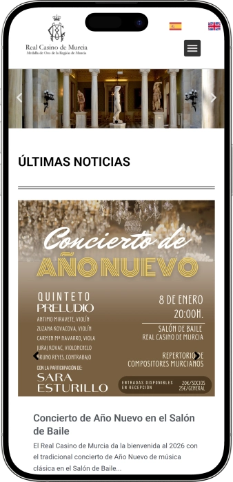

Oferta exclusiva de bienvenida de
Oferta exclusiva de bienvenida de
Real Casino de Murcia: entradas, horario y qué ver por dentro
Los mejores casinos
Detalles de bonificación
Casino
Bonos
Rate
Giros gratis
Más info
Conseguir
Ventajas
-
Sin apuestas: visita tipo museo cultural
-
“Ganas” experiencias con interiores espectaculares
-
Bonus de visita: audioguía incluida
-
Descuento de entrada para tarifa reducida
-
Entrada gratis tarde de domingo
-
Recorrido ágil, sin prisas ni colas
-
Ubicación céntrica junto a la catedral
- El Real Casino de Murcia destaca por su ambiente de club histórico y una belleza interior difícil de igualar: patio árabe, salones nobles y biblioteca clásica en un mismo recorrido.
Real Casino de Murcia App


Acerca de Real Casino de Murcia
El Real Casino de Murcia sobresale porque no ofrece apuestas, sino una visita cultural de gran nivel. La “recompensa” es la experiencia: acceso sencillo, tarifas claras y un recorrido interior realmente impactante.
- Ganancia = 0€ de riesgo.
- Entrada 5€ con audioguía.
- Reducida hasta 3€ disponible.
El Real Casino de Murcia es un edificio emblemático con ambiente de club histórico y museo a la vez. No es un casino de juego, por lo que la visita se vive como un recorrido cultural por estancias lujosas. En su interior conviven varios estilos artísticos que se van sucediendo y crean la sensación de viajar por distintas épocas.
Los espacios son solemnes, pero también están “vivos” gracias a la actividad cultural que acogen. El recorrido suele comenzar por las zonas más representativas y avanza hacia los patios interiores más llamativos. Uno de los grandes momentos es un patio de inspiración oriental con una decoración muy rica. También sorprenden los salones nobles, donde se percibe la tradición de reuniones sociales y actos institucionales. La visita resulta cómoda porque el itinerario es claro y se disfruta sin complicaciones. Además, encaja muy bien en un paseo por el casco histórico por su ubicación central. En conjunto, es un lugar elegido por su atmósfera, su belleza y la intensidad de su patrimonio.
Real Casino de Murcia — elegancia de palacio y espíritu de club
El Real Casino de Murcia se percibe a menudo como un “palacio urbano”, aunque en esencia es una sociedad histórica con tradición de club. La atmósfera interior es a la vez solemne y acogedora: mármoles, vidrieras, dorados y una decoración rica crean el aire de un gran salón social. Un matiz clave es que no se trata de un casino de apuestas, por lo que el foco está en la arquitectura, los interiores y la experiencia cultural. Quien entra busca belleza, salas únicas y la sensación de historia viva, no juego.
En cuanto al horario, suele ser cómodo para el visitante: la entrada turística se organiza principalmente en franjas diurnas y puede variar según la temporada. La visita está pensada para que el recorrido sea claro y agradable incluso para quien llega por primera vez. Habitualmente hay audioguía para entender la evolución del edificio y la mezcla de estilos que lo hacen tan especial. En días con actos privados, alguna estancia puede quedar limitada, pero la idea general se mantiene: un espacio abierto a la cultura.
Dentro se siente un cambio continuo de escenarios: salones nobles, patios interiores y zonas más tranquilas invitan a detenerse. Destacan los lugares donde lo histórico se vuelve casi teatral gracias a la luz y al detalle decorativo. Es fácil imaginar tertulias, lecturas, pequeños conciertos y ceremonias. Incluso una visita breve deja una impresión completa porque cada sala tiene personalidad propia.
La parte de bares y gastronomía suele alinearse con un descanso sereno y una experiencia social clásica, no con un ambiente de noche tipo discoteca. En el edificio o en su entorno vinculado puede haber espacios para café, aperitivo o cena tranquila, donde importan el servicio y el contexto. Este plan encaja muy bien con quien quiere unir cultura y pausa gastronómica. Conviene tener en cuenta que estos espacios pueden tener su propio horario y reservas.
El alojamiento normalmente no está dentro de las salas históricas, sino ligado a infraestructura cercana asociada o colaboradora, lo que facilita dormir en el centro. Para el viajero es práctico: visitar monumentos, cenar y regresar andando al hotel. Así, el Real Casino de Murcia se integra en un fin de semana urbano cómodo y elegante. También funciona muy bien en viajes de trabajo, como punto cultural breve pero memorable.
Si hablamos de “programas de bonus”, aquí tiene más sentido entenderlos como ventajas culturales: distintas tarifas, franjas de entrada gratuita y formatos para grupos. Para la comunidad habitual pesa más la vida de club: eventos, reuniones y acceso social. La lealtad no se expresa en bonos de juego, sino en descuentos de visita y en el valor del vínculo con la sociedad.
Servicio y cuestiones financieras en el Real Casino de Murcia — idiomas, pagos y “cobro de premios”
El personal del Real Casino de Murcia suele operar como en un espacio cultural: recibe al visitante, orienta el recorrido, explica normas y facilita el uso de la audioguía. La atención tiende a ser correcta y calmada, con un aire clásico propio de un club histórico. Cuando hay afluencia, el equipo ayuda a gestionar entradas y a mantener un flujo cómodo por las salas. También es habitual que recuerden el cuidado necesario con el patrimonio, ya que muchos elementos decorativos son delicados.
En cuanto a idiomas, lo más normal es que la comunicación directa se haga en español y que la experiencia turística se apoye en recursos como audioguía y materiales informativos en varios idiomas. Si quieres comprender mejor la historia de cada estancia, conviene aprovechar el audio y la señalética interior. Para dudas prácticas sobre entradas, horarios o restricciones, el personal suele dar respuestas claras y rápidas. En visitas de grupo o actos privados, la coordinación normalmente se realiza con antelación.
Los pagos en este tipo de visita se realizan habitualmente en euros, y suele ser práctico contar con tarjeta o algo de efectivo. Lo común es que se acepten tarjetas bancarias principales, aunque determinados servicios pueden tener condiciones propias. Si planeas consumir en restaurante o espacios de hostelería asociados, recuerda que pueden tener su propio sistema de reserva y cobro. En una zona céntrica, encontrar cajeros en las inmediaciones suele ser sencillo.
El cambio de divisa no suele hacerse dentro del edificio histórico, sino a través de bancos, casas de cambio o cajeros, por lo que es mejor organizarlo previamente. En el propio Real Casino de Murcia no se espera una “caja de casino” ni funciones de cambio como en un complejo de juego. En caso de necesidad, pueden orientarte de forma general, pero las operaciones financieras suelen quedar fuera del espacio cultural. Esto encaja con su naturaleza: patrimonio arquitectónico y sociedad activa, no sala de apuestas.
El “cobro de premios” no aplica, porque el Real Casino de Murcia no ofrece juegos de azar ni apuestas para visitantes. Por tanto, no existe caja de pagos, validación de premios ni procesos de retirada de ganancias. Los gastos del visitante se limitan a entradas, servicios de visita o restauración, no a depósitos de juego. Si buscas un casino de apuestas, conviene no confundir este lugar con un salón de juego.
La fiscalidad de premios tampoco corresponde aquí, ya que no hay ganancias por juego. Para el visitante, la parte fiscal se reduce a los tickets habituales de compras y servicios. Si participas en actos por invitación o actividades de la sociedad, las condiciones se rigen por su normativa interna, sin relación con pagos de juego. En resumen, la experiencia es financieramente transparente: pagas por la visita y recibes cultura y patrimonio.
Normas de visita del Real Casino de Murcia — código de vestimenta, acceso y cómo llegar
El Real Casino de Murcia es un edificio histórico y una sociedad activa, por lo que las normas buscan proteger el patrimonio y asegurar una visita agradable. El código de vestimenta suele implicar un aspecto cuidado, evitando ropa de playa o excesivamente deportiva. En la entrada se espera un comportamiento tranquilo, ya que muchas personas visitan el lugar por la atmósfera y el detalle de los interiores. La fotografía suele permitirse en zonas generales, pero puede haber límites con el flash o en estancias concretas, especialmente si hay actos. La visita se realiza siguiendo un recorrido indicado y se pide no tocar elementos decorativos por conservación. Normalmente los menores pueden entrar acompañados, manteniendo las mismas normas de respeto. En momentos de gran afluencia puede controlarse el aforo por salas para preservar comodidad y seguridad. Si se celebra un evento privado, algunas áreas pueden quedar cerradas temporalmente. Dentro puede haber escalones y cambios de nivel, por lo que conviene calzado cómodo. Si tienes movilidad reducida, es recomendable considerar las particularidades de un edificio histórico. Para una experiencia más tranquila, es mejor acudir a primera hora o fuera de picos. Llegar a pie desde el centro suele ser la opción más simple por su ubicación.
Código de vestimenta:
- • Ropa cotidiana cuidada y correcta.
- • Evitar prendas de playa, elementos de baño o ropa muy sucia.
- • Calzado cómodo por escalones y pasillos.
Condiciones de acceso:
- • Entrada según tarifa/billete y recorrido señalizado.
- • Comportamiento respetuoso y sin ruidos en salas.
- • Posibles restricciones puntuales por eventos.
Prohibiciones y limitaciones:
- • No tocar decoración, mobiliario o elementos patrimoniales.
- • No usar flash donde esté restringido.
- • No acceder a zonas señalizadas como privadas o de servicio.
Aparcamiento y cómo llegar:
- • Lo más práctico es llegar caminando desde el centro.
- • Transporte público cercano con breve tramo a pie.
- • En coche, mejor usar parkings urbanos próximos y continuar andando.
Programa de “fidelidad” del Real Casino de Murcia — ventajas de visita y formatos de acceso
Conviene recordar que el Real Casino de Murcia no es un casino de juego, por lo que la “fidelidad” aquí no se traduce en cashback o jackpots, sino en formatos de entrada ventajosos y en la lógica de una sociedad cultural. Para el visitante, los beneficios principales se concentran en tarifas, servicios incluidos y franjas horarias especiales que hacen la visita más rentable. Lo práctico es que incluso la entrada estándar ofrece un recorrido completo por las estancias más impactantes. A ello se suma el valor de la audioguía, que ayuda a comprender detalles y estilos sin perderse. Para quienes viajan acompañados, existen opciones de grupo y familia que reducen el coste por persona. Además, hay un tramo de acceso gratuito que puede considerarse el “bonus” más atractivo para ajustar presupuesto. Si hablamos de “niveles”, en este contexto son niveles de tarifa, no rangos de jugador. Para públicos recurrentes existe la membresía de la sociedad, cuyas ventajas se enfocan en vida cultural y social. La membresía no es lo mismo que la entrada turística: abre otro tipo de acceso, actividades y participación. También hay que tener en cuenta que en días de eventos algunas condiciones pueden variar, porque el edificio funciona como espacio vivo. En conjunto, la “fidelidad” se entiende como un sistema inteligente de tarifas y formatos para elegir la opción más conveniente.
Condiciones para obtener ventajas
- • Tarifa general: compra de entrada en el acceso; incluye recorrido estándar y servicios de visita. (ejemplo: 5€)
- • Tarifa reducida: se aplica mostrando acreditación en la entrada. (ejemplo: 3€)
- • Formato grupo: válido para visitas organizadas a partir de cierto número. (ejemplo: 3€ por persona)
- • Formato familiar: aplicado a visitas conjuntas con mínimo de participantes. (ejemplo: 3€ por persona con mínimo)
- • Franja gratuita: acceso sin registro en el horario indicado. (ejemplo: domingo 19:00–21:00 = 0€)
Niveles (tarifas) y cómo conseguirlos:
- • Standard (General): se activa al comprar la entrada. (5€ — acceso completo al recorrido)
- • Reduced (Reducida): requiere acreditación. (3€ — ahorro de 2€)
- • Group (Grupo): visita organizada. (3€ — mejor para ir en compañía)
- • Family (Familiar): visita conjunta con condiciones de mínimo. (3€ — presupuesto familiar cómodo)
- • Free Slot (Gratis): se obtiene por horario. (0€ — máxima ventaja)
“Bonos” disponibles y qué aportan
- • Audioguía incluida: mejora la comprensión sin guía presencial. (incluida en la entrada)
- • Ahorro con reducida: menor precio manteniendo la visita. (ejemplo: −2€)
- • Ventaja de grupo: precio por persona más bajo. (ejemplo: 3€ vs 5€)
- • Ventaja familiar: tarifa reducida para visitas conjuntas. (ejemplo: 3€ por persona)
- • Franja gratuita: opción ideal para ahorrar. (ejemplo: 0€ en horario marcado)
Proveedores de software
Entretenimiento y juegos e Real Casino de Murcia
Bonos y ofertas especiales del Real Casino de Murcia — eventos, visitas y formatos de temporada
Como el Real Casino de Murcia no es un casino de apuestas, los “bonos” se relacionan con la visita cultural, los eventos y los servicios, no con jackpots o premios monetarios. Las ventajas más visibles suelen aparecer en forma de franjas gratuitas, tarifas especiales y formatos para grupos. También puede considerarse “oferta” la audioguía y la programación expositiva, que enriquecen el recorrido sin necesidad de un componente de juego. A lo largo del año, espacios de este tipo acogen charlas, presentaciones, conciertos de pequeño formato y exposiciones, por lo que la visita puede coincidir con un extra cultural. En ocasiones, la agenda urbana intensifica la actividad en torno a semanas culturales y periodos festivos, y el edificio se integra en rutas recomendadas. Para el viajero es práctico elegir entre un horario tranquilo para fotos y detalles o un momento con evento para sentir el “club vivo”. La combinación de arquitectura y vida social aporta atractivo adicional: no es un museo estático, sino un lugar en funcionamiento. La vertiente gastronómica también puede sumar, con menús de temporada o cenas temáticas en espacios vinculados. Para familias y grupos, el valor se incrementa al poder compartir la experiencia y ajustar presupuesto. En temporada alta conviene reservar tiempo para mirar con calma, porque el encanto está en los detalles. En resumen, las ofertas aquí no prometen “ganar dinero”, sino ganar experiencia gracias a un buen horario o un evento elegido.
- • Franja gratuita de visita (ejemplo: 0€): acceso sin coste en el horario establecido.
- • Exposiciones temporales (ejemplo: incluidas): actividades expositivas que añaden contenido al recorrido.
- • Noches culturales y actos (ejemplo: entrada extra 10–25€): charlas o conciertos pueden tener ticket propio según formato.
- • Tours urbanos combinados (ejemplo: paquete 15–35€): recorridos por el centro con guía y visita integrada.
- • Ofertas gastronómicas (ejemplo: menú 18–35€): cenas temáticas o menús de temporada en espacios asociados.
- • Audioguía y rutas temáticas (ejemplo: incluidas): mejoran la visita sin costes adicionales de guía.
- • Alquiler para eventos (precio: a medida): condiciones personalizadas según sala, horario y servicios.
“Juegos” y actividades populares en el Real Casino de Murcia
El Real Casino de Murcia no ofrece juegos de azar ni mesas de apuesta, por lo que ruleta o póker no forman parte de la experiencia turística. Aun así, históricamente estas sociedades fueron espacios de ocio donde importaban las actividades sociales e intelectuales. La cultura de club valora juegos de mesa y encuentros que refuerzan la conversación y la convivencia. Para el visitante, el principal “entretenimiento” es el propio recorrido: cambio de estilos, patios, salones nobles y detalles decorativos. En la vida de club suelen existir actividades como ajedrez, dominó o cartas en un marco social sin enfoque público de apuestas. El billar ocupa un lugar especial como símbolo clásico de los clubes europeos, más ligado a la tradición que al azar. También destacan formatos de diálogo cultural: lecturas, encuentros de libros y debates, que son una “competición” de ideas. Conviene entender el lugar como un club cultural donde el “juego” es un ritual social y una experiencia estética. Por eso resulta ideal para quien busca ocio sin riesgo ni apuestas. Si tu objetivo son juegos de azar, este no es el lugar adecuado, porque su propuesta es totalmente distinta. En cambio, para amantes de la historia y el ambiente de salón, ofrece un tipo de disfrute muy especial. En resumen, aquí la popularidad de las actividades nace de la tradición y la cultura, no del dinero.
- • Billar: actividad clásica y relajada de club.
- • Ajedrez: tradición intelectual, a veces con torneos.
- • Dominó: juego social para compartir tiempo.
- • Cartas (formato social): ocio histórico sin foco en apuestas.
- • Encuentros de lectura y debate: “juego” de ideas para público cultural.
- • Veladas con dinámicas culturales: entretenimiento sin mecánica de azar.
- • Reto fotográfico de interiores: mini “challenge” para quienes aman los detalles.
Apuestas en el Real Casino de Murcia
El Real Casino de Murcia es un espacio cultural y una sociedad histórica, no un casino de apuestas. Por eso no existen apuestas de ruleta, blackjack o póker. En su lugar, el visitante maneja tarifas de entrada y formatos de visita, que pueden entenderse como el “mínimo” y “máximo” de gasto. La siguiente tabla resume de forma clara lo que puedes pagar según el tipo de acceso.
| Formato de visita | Mínimo/Máximo | Qué incluye |
|---|---|---|
| Franja gratuita | 0€ | Acceso en el horario establecido |
| Tarifa reducida | 3€ | Entrada reducida, recorrido estándar |
| Tarifa de grupo | 3€ | Precio por persona bajo condiciones |
| Formato familiar | 3€ | Precio por persona con condiciones |
| Tarifa general | 5€ | Entrada estándar y visita |
Eventos y entretenimiento en el Real Casino de Murcia — cultura en lugar de casino nocturno
El Real Casino de Murcia funciona como espacio cultural y club social, por lo que su gran “espectáculo” es la mezcla de arquitectura y agenda de actividades. Es habitual que acoja exposiciones, presentaciones, charlas, conferencias y encuentros que refuerzan su papel como escenario urbano de cultura y convivencia. El ambiente se distancia del casino de ocio nocturno: en vez de salas de juego ruidosas, predominan salones nobles, formatos íntimos y un tono elegante. Para el visitante esto significa que la experiencia puede ser un recorrido tranquilo por interiores o una visita coincidiendo con un acto que aporta energía “en vivo”.
Destacan especialmente los formatos vinculados al arte y a la vida intelectual: conferencias, clubes de lectura, debates y conciertos de pequeño formato. Estas actividades expresan muy bien el carácter de sociedad histórica y hacen sentir la tradición del lugar. Si buscas discoteca o fiestas regulares, conviene saber que no es su perfil principal: no hay una infraestructura de club nocturno permanente como propuesta central. Aun así, recepciones nocturnas, ceremonias o eventos privados pueden generar un ambiente de noche, pero como excepción y no como norma diaria.
El entretenimiento aquí se construye desde la estética: caminar por sus salas ya se vive como una representación donde cada estancia es una escena. Eso es valioso porque no requiere preparación: basta con entrar y seguir el recorrido. En periodos festivos o temporadas culturales la programación puede intensificarse y el espacio sentirse más dinámico. En conjunto, es ideal para quien prefiere ocio cultural, interiores fotogénicos y eventos con una puesta en escena elegante.
Todos los formatos
- • Exposiciones: proyectos temporales en salas.
- • Charlas y conferencias: encuentros intelectuales y ponencias.
- • Presentaciones y ceremonias: actos oficiales y sociales.
- • Conciertos de cámara: música en formato reducido.
- • Clubes de lectura y debates: actividades culturales recurrentes.
- • Recorrido arquitectónico: el “entretenimiento” principal del visitante.
- • Eventos privados: actos por invitación o alquiler de espacios.
Bares, restaurantes y descanso con el Real Casino de Murcia — visita cultural con pausa gastronómica
El descanso alrededor del Real Casino de Murcia se apoya en la atmósfera: es un lugar para ir sin prisas, fijarse en los detalles y hacer una pausa con café o aperitivo. En sociedades históricas, la hostelería suele mantener el estilo del entorno: servicio cuidado, ritmo tranquilo y un aire social elegante. Para el visitante es agradable poder cerrar el recorrido cultural con una comida o una bebida sin alejarse del centro. Este plan funciona bien para parejas, familias o viajeros en solitario que disfrutan de interiores y ambientes con historia.
La propuesta gastronómica en su entorno vinculado suele combinar sabores locales con una presentación contemporánea, donde el contexto cuenta tanto como la cocina. Comer después de ver las salas se siente como una extensión natural de la experiencia, porque se mantiene el mismo tono de calma y elegancia. Para una visita de tarde, la parte gastronómica ayuda a redondear el plan: primero interiores, luego una bebida y conversación. Eso sí, el restaurante puede tener horario propio y, en temporada, requerir reserva.
En cuanto a hoteles, la lógica es urbana: alojarse cerca en el centro para integrar la visita sin desplazamientos. Quien busca comodidad suele elegir un hotel próximo para moverse andando, no depender de transporte y volver fácilmente tras la cena. Así, el Real Casino de Murcia encaja en un “fin de semana cultural”: arquitectura y paseo de día, gastronomía y descanso por la noche. Es especialmente práctico si también quieres visitar la catedral y otros puntos céntricos.
En conjunto, el descanso aquí no va de discoteca ni grandes shows, sino de ocio urbano de calidad. Funciona como punto de “pausa” en una agenda intensa: entrar una hora, vivir un momento memorable y continuar con cena o paseo. Ese equilibrio hace la visita cómoda y muy recordable. Para más tranquilidad, elige horas menos concurridas; para más ambiente urbano, ve cuando el centro tenga más actividad.
Todos los lugares de descanso
- • Restaurante (entorno vinculado): cocina tranquila y servicio cuidado para completar la visita.
- • Escenario café/aperitivo: pausa breve antes o después del recorrido.
- • Hotel cercano (infraestructura asociada): alojamiento cómodo a pocos pasos del centro.
- • Paseo por calles céntricas: continuación natural en una zona con encanto.
Preguntas frecuentes
A menudo se puede entrar sin reserva, pero en temporada alta o para grupos conviene organizarlo previamente.
La accesibilidad puede ser parcial por la naturaleza histórica del inmueble; algunas zonas son más fáciles que otras.
Suele permitirse, aunque el flash o ciertas estancias pueden tener restricciones, especialmente durante eventos.
Las salas históricas pueden acoger actos, pero las condiciones dependen del tipo de evento, horario y disponibilidad.